这样使用电烙铁，你也可以成为电子高手！电子制作必看常识！
原创 电气自动化应用 2019-01-25 20:22:33
[导读]
1.选用合适的焊锡，应选用焊接电子元件用的低熔点焊锡丝。
2.助焊剂，用25%的松香溶解在75%的酒精（重量比）中作为助焊剂。
3.电烙铁使用前要上锡，具体方法是：将电烙铁烧热，待刚刚能熔化焊锡时，涂上助焊剂，再用焊锡均匀地涂在烙铁头上，使烙铁头均匀的吃上一层锡。
4.焊接方法，把焊盘和元件的引脚用细砂纸打磨干净，涂上助焊剂。用烙铁头沾取适量焊锡，接触焊点，待焊点上的焊锡全部熔化并浸没元件引线头后，电烙铁头沿着元器件的引脚轻轻往上一提离开焊点。
电子制作是一项让制作者既动手又动脑的非常有趣的科技实践活动。电子制作并不神秘，入门也不难。但它既然是一门科学，也就不是马马虎虎、不费气力可以学会的。初学电子制作不仅要学习一些基本的知识，更重要的还要掌握一些最基本的操作技能，这样才能动手进行制作，才能取得预期的效果。
大家都知道，在电子制作中，元器件必须依靠焊接，才能有可靠的电气连接，并得到支撑和固定。焊接是电子爱好者对焊锡工艺的称呼，焊接的过程就是用电烙铁使焊料（焊锡）熔化，并借助焊剂（如松香）的作用，将电子元器件的端点与导线或印制电路板等牢固地结合在一起。对焊点的要求是连接可靠、导电大家知道，在电子制作中，各个良好、光洁美观。
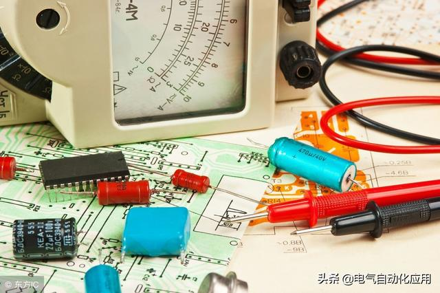
电烙铁焊接的技巧与方法：电烙铁分为哪几种类型：
外热式电烙铁
烙铁头在发热芯里面，又叫普通电烙铁。焊接普通的产品，对温度没什么要求用外热式电烙铁。由于发热电阻丝在烙铁头的外面，有大部分的热散发到外部空间，所以加热效率低，加热速度较缓慢。优点是发热快，不易受潮漏电、手柄温升低，手感轻巧。适合焊接体积较大，不易加热焊接的大型期间。
内热式电烙铁
内热式电烙铁所用的烙铁头形状是空心筒状，发热元件被烙铁头套着，这样它的热量就不容易散发到空气中去，所以热利用效率较高，预热时间较短，而功率一般也不用做太大即可满足要求，一般内热功率在50 W以下，常见20～30 W左右的内热式电烙铁。有单支手柄的，也有焊台的。
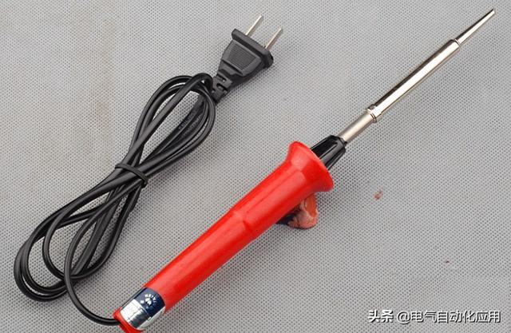
电烙铁焊接的技巧与方法：电烙铁焊接的要求：
要求焊点光滑圆润，不能有“虚焊”，焊锡的量要适中，不能过多或过少。使用电烙铁时，对不同大小的焊件（比如是电子元器件或者是一些比电子元器件大的东西）要使用不同功率的电烙铁；在对元器件进行焊接时，根据情况可先对其进行焊接处打磨，除去表面的氧化层或保护膜，再先上一次锡，以防止正式焊接时由于不容易上锡而造成虚焊。对元器件焊接时，如果 表面有污物或渣类物体，可沾些松香等进行“去污”，保证上锡可靠。焊接电子元器件时，烙铁接触元器件的时间应该越短越好，只要保证能焊牢就行，看到焊锡在元器件处即焊点处均匀融化开（即不是一个“珠状物”，而是均匀淌开），就应该立即移走烙铁，使其冷却；一个电子元器件的焊点，最好能保证在3--5秒内焊接完毕。 总之，具体操作是要靠不断的练习才能使焊接技术不断提高的。
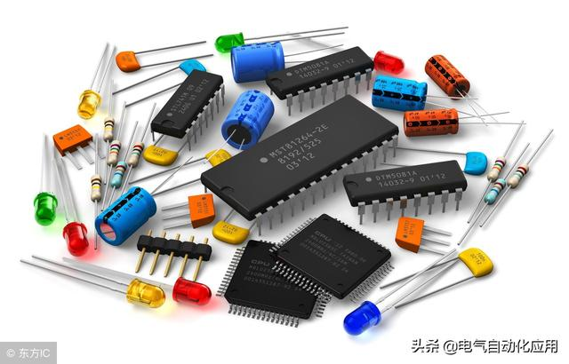
电烙铁焊接的技巧与方法：如何正确使用电烙铁：
焊接技术是一项无线电爱好者必须掌握的基本技术，需要多多练习才能熟练掌握。
1.选用合适的焊锡，应选用焊接电子元件用的低熔点焊锡丝。
2.助焊剂，用25%的松香溶解在75%的酒精（重量比）中作为助焊剂。
3.电烙铁使用前要上锡，具体方法是：将电烙铁烧热，待刚刚能熔化焊锡时，涂上助焊剂，再用焊锡均匀地涂在烙铁头上，使烙铁头均匀的吃上一层锡。
4.焊接方法，把焊盘和元件的引脚用细砂纸打磨干净，涂上助焊剂。用烙铁头沾取适量焊锡，接触焊点，待焊点上的焊锡全部熔化并浸没元件引线头后，电烙铁头沿着元器件的引脚轻轻往上一提离开焊点。
5.焊接时间不宜过长，否则容易烫坏元件，必要时可用镊子夹住管脚帮助散热。
6.焊点应呈正弦波峰形状，表面应光亮圆滑，无锡刺，锡量适中。
7.焊接完成后，要用酒精把线路板上残余的助焊剂清洗干净，以防炭化后的助焊剂影响电路正常工作。
8.集成电路应最后焊接，电烙铁要可靠接地，或断电后利用余热焊接。或者使用集成电路专用插座，焊好插座后再把集成电路插上去。
9.电烙铁应放在烙铁架上。
电烙铁焊接的技巧与方法：针对不同的电子元器件焊接要注意什么？
针脚式元器件的焊接：用电烙铁和焊锡丝在适当的位置点化形成水滴状的焊滴，在焊放阵脚元件时，要先将元件管脚选择合适的长度，这点可以根据元件自身的封装。点锡的过程是先将电烙铁放在焊盘上，然后将焊锡丝靠近焊盘，觉得锡量合适了先将焊锡丝移开，是焊锡成水滴状后将电烙铁移开，注意：不宜在焊盘上放置太多的焊锡。最后再将长的管脚线剪掉即可。
贴片式元器件用电烙铁焊接：先在焊盘上涂少量的焊锡，（如果是扁平的元器件可以多放些焊锡这样可以避免最后再补锡，但要是比较厚的元件象电容、发光二极管等可以考虑先放少量的焊锡感觉能将元件焊住即可，最后在进行补锡，以防元件焊的不够牢固）然后用电烙铁和镊子先固定元件的一端，确定元件没有偏，然后再点化另一端焊盘使元件固定，要想使元件与电路板紧贴，可以先用电烙铁点化第一端的焊锡，瞬间点化另一端的焊锡并用镊子往下压（这种方法适合型号大点的贴片电阻）。
焊接集成芯片式贴片元件时，先在芯片各个管脚焊盘上点少量的焊锡，然后将芯片放上，确定好位置先将芯片的对角两端固定，如果固定的有偏置可以拿掉再重新固定，没有问题可以将其他的管脚先于本来焊盘上的焊锡相连接，最后根据需要再给各个管脚加少量的焊锡以使更加固定没有悬空。最后用镊子检查一下是否有没有焊上的管脚。
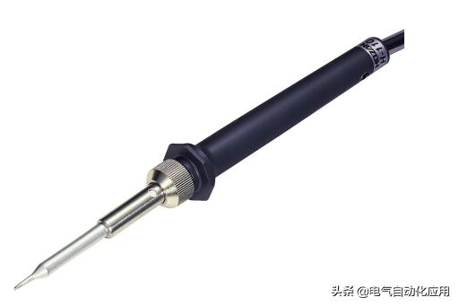
电烙铁焊接的技巧与方法：图解电烙铁焊接原理：
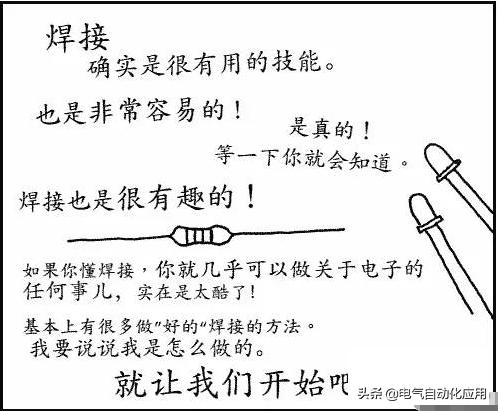
是很有用的技能。
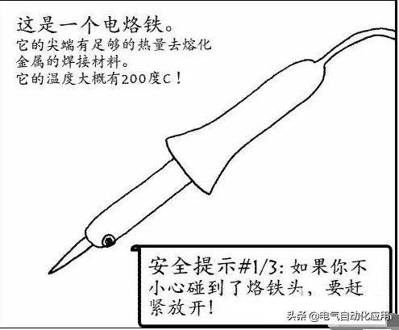
这是一个电烙铁。
它的尖端有足够的热量去熔化
金属的焊接材料。
它的温度大概有200度C！
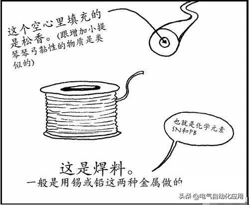
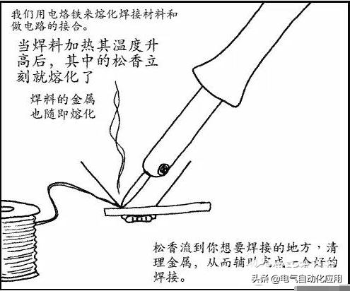
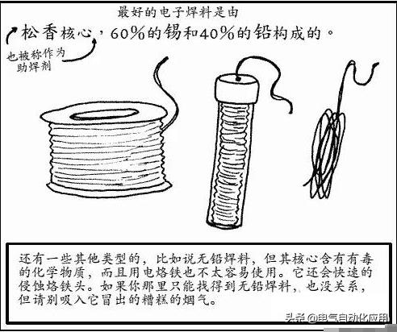
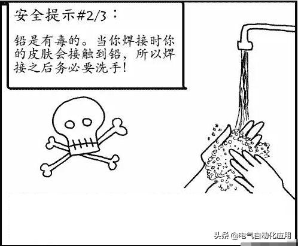

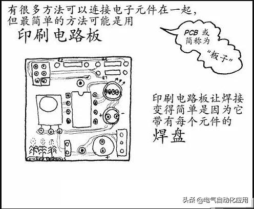
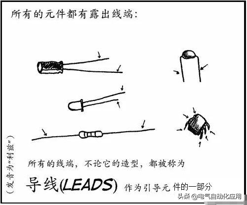
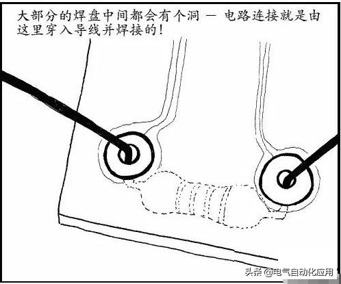
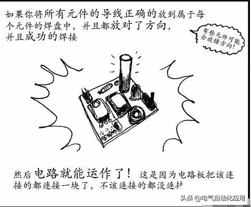
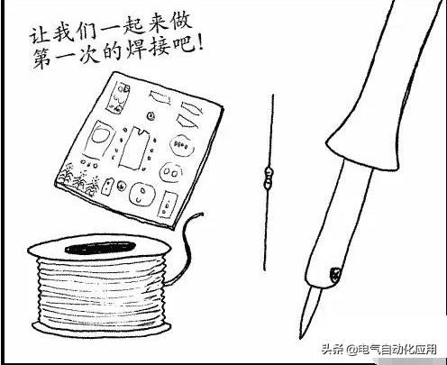
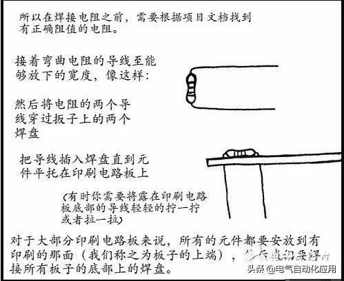
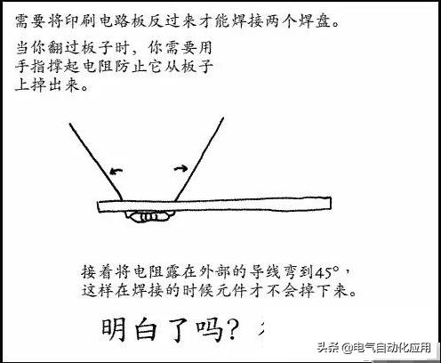
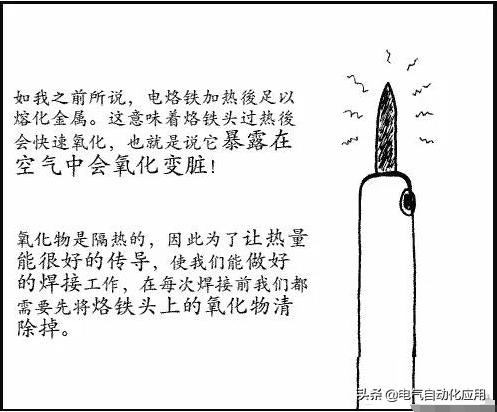

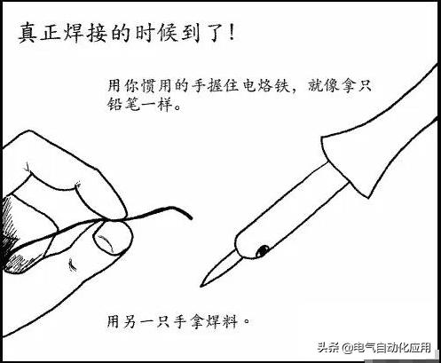

不太认同你的一些观点。
1.现在提倡使用无铅焊锡，尽量不要使用低熔点的有铅焊锡。
2.助焊剂多种多样，酒精松香是比较好的，但是如果不是老旧的元件，没有必要用酒精，因为溶液粘性大，不好处理。就算用酒精，我也会把酒精松香放室外晾干，内部只存在少量酒精（焊接的时候可以明显闻到气味），就足以利用酒精的还原性了。
3.烙铁通电后就应该立刻往松香上碰（而不是能化锡再去），尽早融化松香保护烙铁头。开始使用的时候在高温海绵上擦掉松香。
4.焊接完成后应该用洗板水洗或者异丙醇擦掉助焊剂，用酒精会留下白色痕迹。
5.图片里面说锡60%，铅40%是错的。通常有铅焊锡的锡铅含量分别是63%、37%。